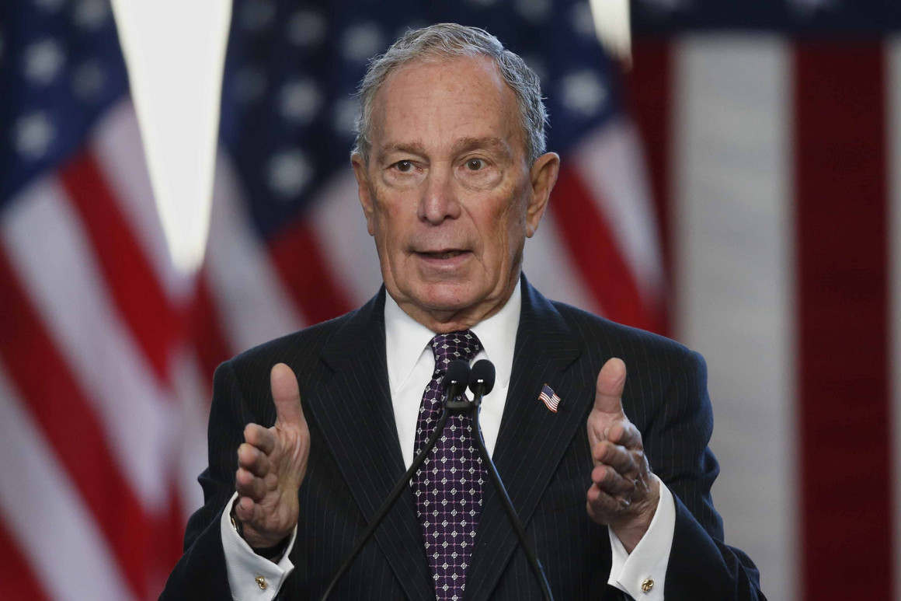
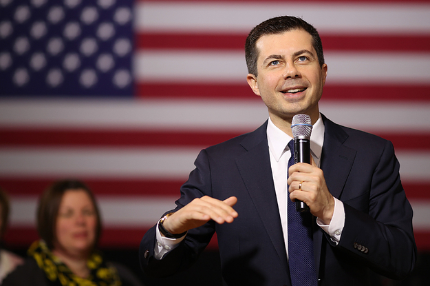
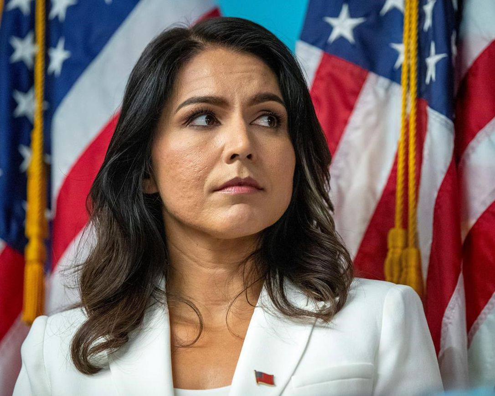
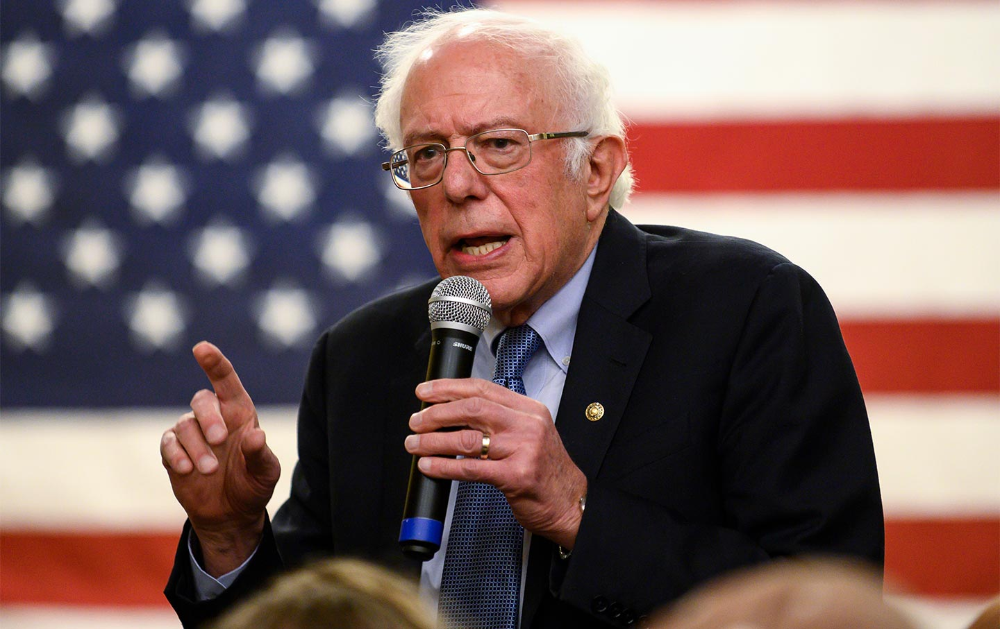
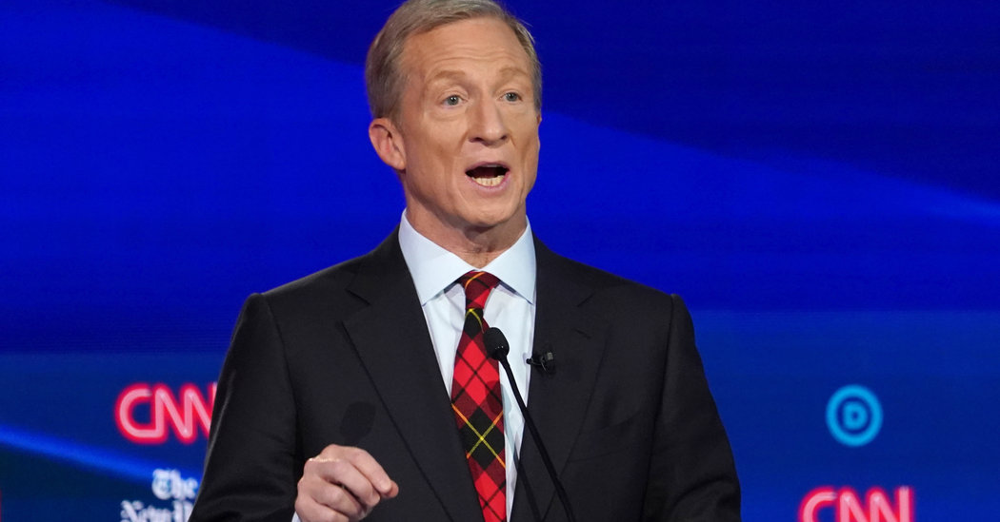
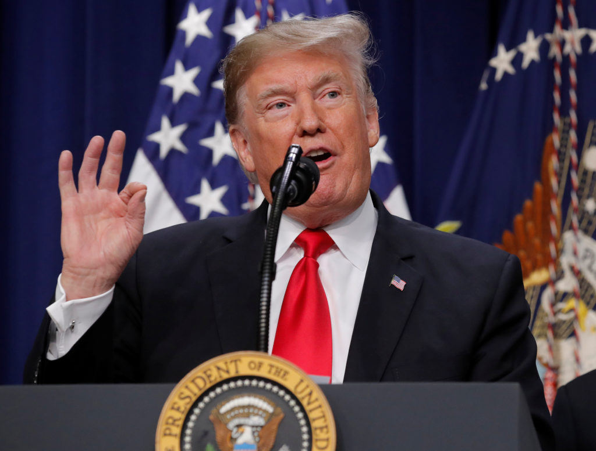
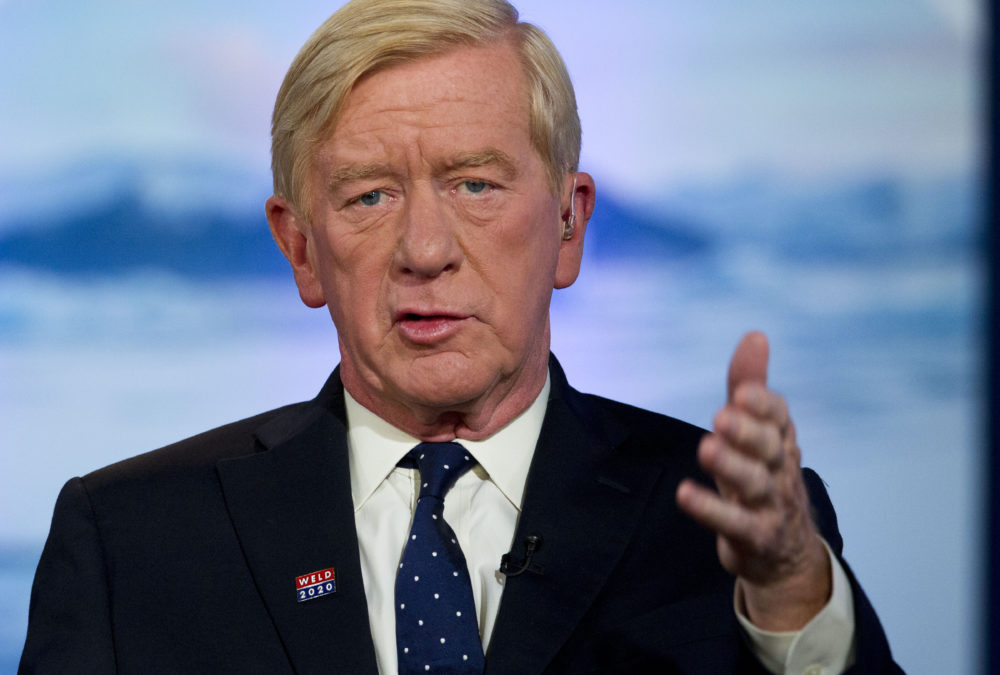

Known for his ability to connect with working-class voters.
Democrat who supports a moderate policy platform.
Signature Issues: Increase America’s leadership on the world stage, strengthen economic protections for the middle and working class, ensure an inclusive democracy and be tough on gun control.
Ban manufacture and sale of assault weapons and high-capacity magazines.
Buy back the assault weapons and high-capacity magazines already in our communities
Restrict the number of firearms an individual may purchase per month to one.
End the online sale of firearms and ammunitions.
Enact universal background check
Incentivize state “extreme risk” laws
Prohibit the use of federal funds to arm or train educators to discharge firearms
Require firearms owners to report if their weapon is lost or stolen.
Direct the ATF to issue an annual report on firearms trafficking.
Require gun owners to safely store their weapons.
Micheal Bloomberg

Overview:
Businessman and former three term mayor of New York City.
Formed his own company in 1981, Bloomberg L.P., a global financial services, software and mass media company and is known for its Bloomberg Terminal, a computer software system providing financial data widely used in the global financial services industry.
In November 2019 he became the ninth-richest person in the United States and the 14th-richest person in the world; his net worth was estimated at $58 billion.
Since signing The Giving Pledge whereby billionaires pledge to give away at least half of their wealth, Bloomberg has given away $8.2 billion.
Lifelong Democrat before seeking elective office, he switched his party registration in 2001 to run for mayor as a Republican. In the middle of his second term he switched to a registered Independent. In 2018 he again switched his registration back to Democrat.
Democrat who is a fiscal conservative and represents a more centrist policy platform.
Signature Issues: Gun violence, climate change, education, women’s rights, and health care.
Reinstate the federal ban on assault weapons and high-capacity magazines.
Require secure storage of firearms.
Ban all guns in K-12 schools, colleges, and universities – except for law enforcement.
Require gun buyers to be at least 21 years old to buy handguns and semi-automatic rifles and shotguns.
Pass a federal red flag law that expands extreme risk orders to 50 states.
Require every gun buyer to get a permit before making a purchase.
Personally fund gun violence research.
Repeal the Protection of Lawful Commerce in Arms Act (PLCAA) so that gunmakers and gun dealers will no longer have broad immunity from civil lawsuits.
Pete Buttigieg

Overview:
Former openly gay Mayor of South Bend, Indiana.
A veteran who served as a lieutenant in the U.S. Navy Reserve, assigned to the Afghan Threat Finance Cell, a counterterrorism unit that targeted Taliban insurgency.
Democrat who represents a more moderate policy platform.
Signature issues: Medicare-For-All-Who-Want-It, tough environmental policies, and more economic opportunity for the middle and working class.
Enact red flag laws (also known as extreme risk laws) that disarm at-risk individuals and allow friends and family to intervene when they observe warning signs.
Close the “boyfriend loophole” to keep guns out of the hands of domestic abusers.
Close the “Charleston loophole” to allow the FBI additional time to complete every background check.
Close the hate loophole to prohibit people convicted of hate crimes from acquiring or possessing firearms.
Hold the gun industry accountable by repealing the Protection of Lawful Commerce in Arms Act (PLCAA) to end gun industry immunity.
Establish a nationwide gun licensing system.
Resume federal funding for gun violence research.
Invest in proven evidence-based urban gun violence intervention programs.
Tulsi Gabbard

Overview:
Hawaii Army National Guard major who serves in the U.S. Representative since 2012.
First Hindu member of Congress and the first Samoan-American voting member of Congress.
First female combat veteran to run for president.
Served in a field medical unit of the Hawaii Army National Guard in Iraq from 2004 to 2005 and was deployed to Kuwait from 2008 to 2009 as Army Military Police platoon leader.
Served as the vice chair of the Democratic National Committee from 2013 to 2016.
Endorsed Senator Bernie Sanders for the 2016 Democratic presidential nomination.
Signature issues: Medicare for All health care plan she calls "Single Payer Plus", and strengthening Roe v. Wade by codifying it into federal law, Family Act for paid family and medical leave and universal basic income.
Institute universal background checks by closing the gun show loophole.
Ban bump stocks that can increase a semi automatic rifle’s rate of fire to 700 rounds per minute.
Ban high capacity magazines that hold more than 10 rounds of ammunition.
Raise the age to buy military-style assault weapons from 18 to 21 and fight to ban the sale of assault weapons.
Provide grants to states to implement extreme risk provisions to empower families and law enforcement to keep guns away from people who show signs of threatening behavior.
Close the “Charleston loophole” by giving law enforcement additional time to complete background checks.
Close the “boyfriend loophole” by preventing people who have abused dating partners from buying or owning firearms.
Establish a wait period for sales of handguns and assault rifles, which law enforcement can waive in the case of an emergency.
Prohibit the online publication of code for 3D printing firearms.
Hold manufacturers and distributors of gun kits to the same standards as those of completed firearms.
Provide funding for the Centers for Diseases Control and Prevention to conduct research on firearm safety and gun violence prevention.
Bernie Sanders

Overview:
Has served in the Federal Government representing the state of Vermont 29 years, currently in the U.S. Senate and formerly in the U.S. House of Representatives.
Self-proclaimed Socialist Democrat who supports a progressive policy platform.
Signature issues: Implementing Medicare-For-All, the Green New Deal, and Free Community College for all.
Implement a buyback program to get assault weapons off the streets.
Crack down on “straw purchases” where people buy guns for criminals.
Support “red flag” laws and legislation to ensure we keep guns out of the hands of domestic abusers and stalkers.
Ban the 3-D printing of firearms and bump stocks.
Tom Steyer

Overview:
American hedge fund manager, philanthropist, environmentalist, liberal activist, and fundraiser.
Founder and former co-senior-managing-partner of Farallon Capital
Founder of Onecalifornia Bank, which became (through merger) Beneficial State Bank, an Oakland–based community development bank.
In 2012, Steyer and his wife signed The Giving Pledge to donate half of their fortune to charity during their lifetime.
In 2013 he launched NextGen America, a nonprofit organization that supports progressive positions on climate change, immigration, health care, and education.
Classify white supremacists as domestic terrorists.
Create a new Office of Gun Violence Prevention.
Donald Trump

Overview:
Current President of the United States.
Businessman and real estate developer.
Reality TV show producer and star.
Republican who supports a conservative policy platform which he has dubbed “America First Platform.”
Signature issues: lower taxes, repeal and replace the Affordable Care Act (ACA), end stifling regulations, protect our borders, keep jobs in our country, take care of our veterans, strengthen our military and law enforcement, and renegotiate bad trade deals
Stance on Gun Safety:
Policy Plan
End gun-free zones in schools and on military bases.
Ban guns for people on terrorist watch-lists.
Make concealed-carry permits valid across all states.
Elizabeth Warren
Overview:
U.S. senator from Massachusetts, since 2013.
Former Harvard Law Professor.
Headed the Consumer Financial Protection Bureau under President Obama.
Left leaning Democrat who supports a progressive platform after switching party affiliation in 1996.
Signature issues: Implementing Medicare-For-All, two percent wealth tax and cracking down on corporate corruption.
Revoke licenses for gun dealers who break the laws
Create a federal licensing system.
Increase taxes on gun manufacturers.
Ban assault weapons and high capacity magazines.
Pass extreme risk protection laws.
Hold gun manufacturers strictly liable for the harm they cause through a federal private right of action.
Bill Weld

Overview:
Former two-term Republican governor of Massachusetts and the Libertarian Party’s 2016 vice-presidential nominee.
He is a writer and attorney who served as a legal counsel to the U.S. House Judiciary Committee during the impeachment inquiry of President Richard Nixon.
He is a fiscally conservative Republican who supports a conservative policy platform, however he is a proponent for LGBTQ rights, supports gay marriage and abortion rights.
Signature issues: Favors fiscal restraint, free trade, and moderate immigration reform (has called for closer ties with Mexico and Canada), and has endorsed steps to legalize marijuana.
Red Flag laws, if done correctly, make a lot of sense.
Has said that “Universal '' background checks are easier said than done. He raises some fundamental concerns, and thinks they may not be the overarching solution many seem to believe.
Supports the Supreme Court’s Heller decision in 2008 confirmed that the 2nd Amendment’s protection of the right to bear arms applies to individuals.